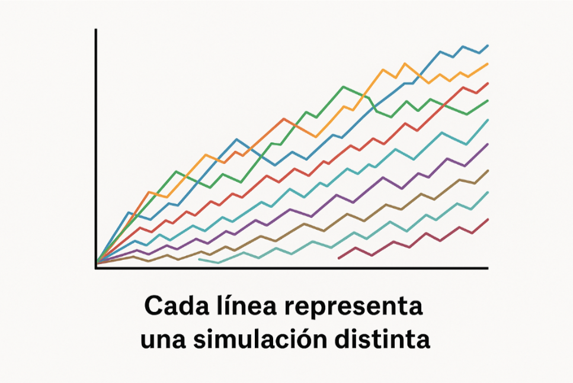

Simulaciones de Montecarlo
Grupo 5
Investigación Operativa
Introducción
La Simulación de Montecarlo es una forma de usar el azar y las probabilidades para entender mejor problemas que tienen muchas variables inciertas.
El nombre viene del famoso casino de Monte Carlo, porque este método se basa justamente en el azar.
Casino de Monte Carlo, Principado de Mónaco, Europa.
¿Cómo funciona?
En lugar de hacer una sola cuenta o fórmula, Montecarlo consiste en repetir muchas veces un mismo cálculo, usando distintos valores aleatorios.
Así vemos qué resultados pueden darse y con qué frecuencia.
Ejemplo práctico
Si queremos saber cuánto puede tardar un proyecto, podemos simular cientos o miles de veces cambiando los tiempos de cada tarea al azar (dentro de un rango realista).
Así obtenemos un promedio y un rango de posibilidades: cuál es el caso más rápido, el más lento y el más probable.
¿Para qué sirve la Simulación de Montecarlo?
Se usa cuando hay incertidumbre o muchas variables que no se pueden controlar exactamente.
Lo importante es que no da una sola respuesta, sino un conjunto de resultados posibles con sus probabilidades.
Algunos ejemplos:
En finanzas, para estimar ganancias o pérdidas posibles según cómo cambie el mercado.
En gestión de proyectos, para prever si una obra o trabajo va a terminar a tiempo.
En ingeniería o producción, para probar diferentes combinaciones sin gastar materiales reales.
En negocios o marketing, para estimar ventas o comportamientos de clientes.
Conceptos básicos

Evento incierto
Es cualquier situación donde no sabemos el resultado exacto hasta que pasa.
Ejemplos: cuánto vas a tardar en un trámite, si llueve mañana, cuánta gente va a entrar a un negocio.
Resultado aleatorio
Es el valor que puede salir en cada intento.
Ejemplo: si tiras un dado, puede tocar cualquier número del 1 al 6. Cada número es un posible resultado del azar.
Comportamiento probable
En lugar de decir "esto va a pasar seguro", decimos:
"Lo más probable es que pase esto, pero también puede pasar esto otro."
Así, entendemos mejor qué tan variable puede ser algo.
Números generados al azar
La computadora genera valores aleatorios como si tirara un dado digital.
Cada número representa una posible realidad. Cuantos más valores usamos, más completa es la simulación.
Repeticiones o simulaciones
Cada repetición del experimento es una simulación diferente.
Es como "probar el futuro" una y otra vez. Mientras más veces se repite los resultados se vuelven más estables y realistas.
Sacar conclusiones
Después se analizan todos los resultados juntos:
- cuál fue el más común
- cuál fue el más alto y el más bajo
- cuánto se repitieron los valores
Así obtenemos un rango de resultados en lugar de una sola respuesta.
¿Cómo funciona paso a paso?
1
Definir el problema
Qué queremos analizar (por ejemplo, cuánto tiempo tarda un pedido, algunos llegan en 2 días, otros en 3 o 4, y a veces en 5 si hay demoras).
2
Elegir las variables inciertas
Qué cosas cambian y dentro de qué valores (siguiendo el ejemplo la variable incierta es el tiempo de entrega, que puede variar según clima, tránsito, stock, etc.)
Decidimos que puede tomar valores entre 2 y 5 días, con mayor probabilidad de estar cerca de 3.
3
Generar datos al azar
La computadora genera números aleatorios dentro de ese rango (2 a 5).
Cada número representa un pedido simulado: uno llega en 2 días, otro en 3 días….
4
Correr muchas simulaciones
Se repite el proceso cientos o miles de veces.
Cuantas más veces lo hacemos, más confiable se vuelve el promedio.
5
Analizar los resultados
Se obtiene un promedio y una idea de cuánto puede variar el resultado.
- El promedio de tiempo (por ejemplo, 3,2 días).
- El mínimo y máximo (2 y 5 días).
- Y cuántas veces se repitió cada valor.
Así entendemos cuánto puede variar el tiempo real de entrega, sin tener que esperar meses de datos reales.
Ventajas y Desventajas
Ventajas
- ✅ Es fácil de aplicar una vez entendido el método.
- ✅ Permite probar miles de escenarios distintos sin tener que hacerlo en la vida real.
- ✅ Ayuda a tomar decisiones con información más completa, viendo lo mejor, lo peor y lo probable.
- ✅ Se puede usar en Excel, Python o programas especializados sin conocimientos avanzados.
Desventajas
- ❌ Si las suposiciones son malas (por ejemplo, elegir mal los rangos o probabilidades), los resultados no sirven.
- ❌ Puede llevar tiempo o requerir muchas repeticiones para que el promedio sea confiable.
- ❌ No da una solución exacta, sino una aproximación, lo cual a veces no alcanza para decisiones muy precisas.
Herramientas para simular
- Excel o Google Sheets: con la función RAND() se pueden generar valores aleatorios y crear simulaciones básicas.
- Python o R: permiten hacer simulaciones más rápidas y con gráficos automáticos.
- Programas especializados: como Minitab o Arena, usados en empresas y universidades para modelos más complejos.
Ejemplo Práctico
Simulación de Montecarlo: tiempo de entrega de pedidos
Ejemplo didáctico para Investigación Operativa
Código Python
# Importamos las librerías necesarias
import random # para generar números aleatorios
import matplotlib.pyplot as plt # para graficar resultados
# Cantidad de simulaciones que vamos a realizar
n = 1000 # significa que simularemos 1000 pedidos
# Creamos una lista vacía para guardar los tiempos simulados
tiempos = []
# Bucle que genera los valores al azar
# En este caso, cada tiempo de entrega será un número entre 2 y 5 días
for i in range(n):
tiempo = random.uniform(2, 5) # genera un número decimal entre 2 y 5
tiempos.append(tiempo) # lo guarda en la lista 'tiempos'
Cálculo del promedio
# Calculamos el promedio (media) de los tiempos obtenidos
promedio = sum(tiempos) / len(tiempos)
# Mostramos el resultado por consola
print(f"Promedio de entrega: {promedio:.2f} días")
Gráfico de resultados
# Creamos un histograma (gráfico de barras) para visualizar
# la frecuencia de los tiempos simulados
plt.hist(tiempos, bins=10, color='skyblue', edgecolor='black')
# Dibujamos una línea vertical para marcar el promedio
plt.axvline(promedio, color='red', linestyle='dashed',
linewidth=2, label=f'Promedio: {promedio:.2f}')
# Agregamos título y etiquetas para que sea claro
plt.title("Distribución de tiempos de entrega simulados")
plt.xlabel("Días")
plt.ylabel("Frecuencia")
# Mostramos la leyenda (donde aparece el valor del promedio)
plt.legend()
# Finalmente, mostramos el gráfico en pantalla
plt.show()
¿Qué hace este código paso a paso?
- Genera 1000 pedidos simulados con tiempos aleatorios entre 2 y 5 días.
- Calcula el promedio de todas esas simulaciones.
- Dibuja un gráfico donde se ve qué tan seguido aparecen los distintos tiempos.
- Marca con una línea roja el promedio general (alrededor de 3,2 días).
Código completo
# ----------------------------------------------
# Simulación de Montecarlo: tiempo de entrega de pedidos
# Ejemplo didáctico para Investigación Operativa
# ----------------------------------------------
# Importamos las librerías necesarias
import random # para generar números aleatorios
import matplotlib.pyplot as plt # para graficar resultados
# Cantidad de simulaciones que vamos a realizar
n = 1000 # significa que simularemos 1000 pedidos
# Creamos una lista vacía para guardar los tiempos simulados
tiempos = []
# Bucle que genera los valores al azar
# En este caso, cada tiempo de entrega será un número entre 2 y 5 días
for i in range(n):
tiempo = random.uniform(2, 5) # genera un número decimal entre 2 y 5
tiempos.append(tiempo) # lo guarda en la lista 'tiempos'
# Calculamos el promedio (media) de los tiempos obtenidos
promedio = sum(tiempos) / len(tiempos)
# Mostramos el resultado por consola
print(f"Promedio de entrega: {promedio:.2f} días")
# ----------------------------------------------
# Gráfico de resultados
# ----------------------------------------------
# Creamos un histograma (gráfico de barras) para visualizar la frecuencia de los tiempos simulados
plt.hist(tiempos, bins=10, color='skyblue', edgecolor='black')
# Dibujamos una línea vertical para marcar el promedio
plt.axvline(promedio, color='red', linestyle='dashed', linewidth=2, label=f'Promedio: {promedio:.2f}')
# Agregamos título y etiquetas para que sea claro
plt.title("Distribución de tiempos de entrega simulados")
plt.xlabel("Días")
plt.ylabel("Frecuencia")
# Mostramos la leyenda (donde aparece el valor del promedio)
plt.legend()
# Finalmente, mostramos el gráfico en pantalla
plt.show()
# Qué hace este código paso a paso:
# Genera 1000 pedidos simulados con tiempos aleatorios entre 2 y 5 días.
# Calcula el promedio de todas esas simulaciones.
# Dibuja un gráfico donde se ve qué tan seguido aparecen los distintos tiempos.
# Marca con una línea roja el promedio general (alrededor de 3,2 días).
Bibliografía
IBM. (s.f.). ¿Qué es la simulación de Montecarlo? IBM España. Recuperado el 7 de noviembre de 2025, de https://www.ibm.com/es-es/topics/monte-carlo-simulation
EALDE Business School. (2023, 15 de marzo). Método de simulación de Montecarlo: qué es y para qué sirve. Recuperado de https://www.ealde.es/metodo-simulacion-monte-carlo/
QuestionPro. (2024, 12 de abril). Simulación de Monte Carlo: qué es, ventajas, desventajas y ejemplos. Recuperado de https://www.questionpro.com/blog/es/simulacion-de-monte-carlo/
Bibliografía (continuación)
DCF Modeling. (2023, 22 de mayo). Comprender los pros y los contras de la simulación de Montecarlo. Recuperado de https://dcfmodeling.com/es/blogs/blog/pros-cons-monte-carlo-simulation
Camerdata. (2023, 4 de junio). Simulación de Monte Carlo: beneficios y ejemplos prácticos. Recuperado de https://www.camerdata.es/blog/simulacion-de-monte-carlo-beneficios/
Forms.app. (2024, 20 de febrero). Simulación de Montecarlo: explicación y ejemplos sencillos. Recuperado de https://forms.app/es/blog/simulacion-monte-carlo
Minitab. (2023, 8 de agosto). Cómo utilizar la simulación de Montecarlo como herramienta de gestión de proyectos. Recuperado de https://blog.minitab.com/es/c%C3%B3mo-utilizar-la-simulaci%C3%B3n-monte-carlo-como-una-herramienta-de-gesti%C3%B3n-de-proyectos
¡Gracias!
Simulaciones de Montecarlo
Investigación Operativa